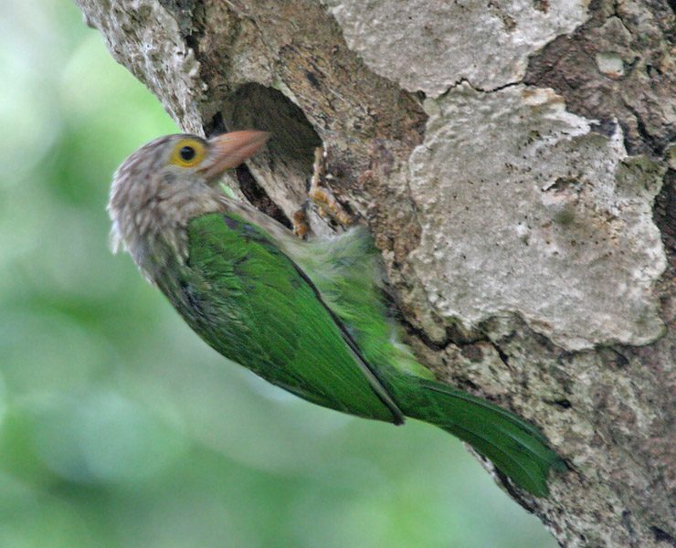

लाइनिएटेड बार्बेटLineated Barbet
Psilopogon lineatus · Megalaimidae · BRD-0330

- Scientific name वैज्ञानिक नाम
- Psilopogon lineatus (Vieillot, 1816)
- Family कुल
- Megalaimidae
- Hindi हिंदी
- लाइनिएटेड बार्बेट
- Local names स्थानीय नाम
- kuturga, lineated barbet, striated barbet
- Status here यहाँ की स्थिति
- native
- Movement आवागमन
- Resident, here all year
- Known from कहाँ दर्ज
- Others have published records from the wider Awadh–Purvanchal plain, none yet from Basti–Ayodhya अवध–पूर्वांचल से दूसरों के प्रकाशित अभिलेख, बस्ती–अयोध्या से अभी नहीं
- IUCN IUCN
- LC
- Review समीक्षा
- not yet reviewed
When to look कब देखें
Present all year. साल भर मौजूद।
Tell it apart from इनसे अलग पहचानें
लाइनिएटेड बार्बेट / Lineated Barbet
Psilopogon lineatus (Vieillot, 1816) — Megalaimidae
लाइनिएटेड बार्बेट — तराई के जंगलों और पुराने बागों के ऊंचे पेड़ों की चोटियों पर बैठने वाला एक भारी, हरा और तेज आवाज वाला फलभक्षी पक्षी है। इसका शरीर गहरा घास जैसा हरा होता है, जबकि सिर, गर्दन और सीना मटमैले भूरे रंग का होता है जिस पर सफेद-पीली खड़ी धारियां (लाइन्स) बनी होती हैं। इसकी आंख के चारों ओर नंगी पीली चमड़ी का एक स्पष्ट चश्मा जैसा घेरा होता है और चोंच भारी तथा हल्की गुलाबी-पीली होती है। गर्मी के दिनों में इसकी 'कुटुर्-कुटुर्-कुटुर्' जैसी गूंजती आवाज पूरे जंगल में दूर तक सुनाई देती है।
Quick Identification त्वरित पहचान
| Feature | Description |
|---|---|
| Habit | Stocky, heavy-billed, canopy-dwelling frugivorous barbet of deciduous woodlands |
| Head and Breast | Whitish-buff or pale brown, heavily streaked with broad longitudinal white stripes |
| Body | Vivid grass-green wings, mantle, rump, and abdomen |
| Orbital Skin | Bare, fleshy, bright yellow or orange-yellow eye ring patch |
| Bill | Stout, heavy, pale fleshy-pink or yellowish-horn bill with strong bristled rictus |
| Call | Resonant, rolling, repetitive disyllabic or trisyllabic kutur-kutur-kutur booming call |
| Flight | Undulating flight with rapid wing beats interspersed with glides between tall canopies |
Field tip: Listen on warm sunny mornings for a persistent, echoing kutur-kutur-kutur calling from the highest dead bough of a tree. The grass-green body, heavily white-streaked head and neck, and prominent yellow bare eye patch distinguish it.
हिंदी:
यह तोते जैसा हरा पक्षी है जिसका सिर और सीना भूरा और सफेद धारियों से भरा होता है।
आंख के चारों ओर पीली चमड़ी का गोल घेरा और चोंच मोटी तथा भारी होती है।
यह पेड़ की ऊंची डाल पर बैठकर 'कुटुर्-कुटुर्' की आवाज लगातार दोहराता रहता है।
Morphology आकारिकी
Measurements as given by Baker (1927 under "Thereiceryx lineatus"):
| Measurement | Range |
|---|---|
| Wing | Wing 123 to 137 mm. (Baker 1927 as Thereiceryx lineatus) |
The Lineated Barbet is a robust, heavily built piciform bird displaying sturdy proportions. The head, nape, chin, throat, and upper breast are dirty greyish-brown to pale buff, boldly striated with broad, pale cream-white longitudinal streaks along the feather centers.
The mantle, back, wings, rump, and tail are a deep, lustrous grass-green. The lower abdomen and flanks are pale yellowish-green with faint olive striations. The skin surrounding the eye is completely naked and vivid chrome-yellow to orange-yellow.
The bill is exceptionally stout, deep, and conical, suited for excavating wood and crushing tough-skinned wild figs, colored pale yellowish-pink or flesh-colored with a dusky tip. The base of the bill is surrounded by stiff, projecting black rictal bristles. The feet are zygodactyl (two toes pointing forward and two backward), pale greenish-yellow with strong curved claws.
Vocalisations. The advertising call is a loud, far-carrying, rhythmic sequence of rolling notes, typically transcribed as kot-tur, kot-tur, kot-tur, produced by inflating the throat sac while bobbing the head from side to side.
हिंदी:
इसके पंखों का फैलाव 123 से 137 मिमी तक होता है।
इसके पैरों में दो उंगलियां आगे और दो पीछे होती हैं जिससे यह पेड़ के तने को मजबूती से पकड़ सकता है।
बोलते समय यह अपना गला फुलाकर सिर को इधर-उधर हिलाता है।
Behaviour & Ecology व्यवहार और पारिस्थितिकी
Psilopogon lineatus is almost exclusively arboreal, spending its entire existence in the upper canopies of fruiting trees and high exposed boughs. It rarely if ever visits the ground, except perhaps to retrieve fallen large fruit.
It is a vital primary cavity excavator in tropical deciduous forests. Using its powerful chisel-like bill, a pair drills an entrance hole through the bark and excavates a deep breeding chamber into rotten or soft deadwood of a standing tree trunk. These hollows later serve as crucial nesting and roosting shelters for secondary cavity-nesting birds and small mammals.
हिंदी:
यह हमेशा पेड़ों की ऊंची डालियों पर रहता है और जमीन पर कभी नहीं आता।
यह अपनी मजबूत चोंच से सूखे तनों में गहरा छेद खोदकर अपना घोंसला बनाता है।
Life Cycle / Phenology जीवन चक्र
In the lower hills and foothills from Kumaon to Assam, breeding occurs in April and May, with some birds breeding into June (Baker 1927, p. 112). Courting involves head bobbing and calls.
Both sexes cooperate in excavating a nest cavity in dead stumps or semi-rotten branches, usually at a moderate height above the ground. A small clutch of unmarked white eggs is laid directly on bare wood chips. Both parents share incubation duties for a few weeks and provision the nestlings with fruit and insects until they fledge.
हिंदी:
कुमाऊं से असम की तलहटी तक यह अप्रैल और मई में तथा कभी-कभी जून तक प्रजनन करता है (बेकर 1927)।
नर और मादा दोनों मिलकर सूखे तनों में छेद खोदकर घोंसला बनाते हैं।
कुछ सप्ताह अंडे सेने के बाद बच्चे निकलते हैं जिनकी देखभाल दोनों मिलकर करते हैं।
Host Plants or Prey आहार
The Lineated Barbet is an omnivorous frugivore with a strong preference for wild figs, supplementing its intake with insects:
- Fleshy fruits of native figs (Ficus benghalensis, Ficus religiosa, Ficus racemosa, Ficus virens)
- Wild drupes and berries of Syzygium cumini (Jamun), Ziziphus, and Trema orientalis
- Large winged insects, cicadas, mantises, and wood-boring beetle larvae
हिंदी:
इसका मुख्य आहार गूलर, बरगद, पीपल और जामुन के पके फल हैं।
यह पेड़ के कीड़े और इल्लियां भी खाता है।
Predators / Natural Enemies शत्रु व परभक्षी
Hawks, owls, and small carnivores take birds of this size. No source opened for this atlas names a specific predator of this bird.
हिंदी:
बाज़, उल्लू और छोटे मांसाहारी इस आकार के पक्षियों का शिकार करते हैं। इस एटलस के लिए खोले गए किसी स्रोत में इस पक्षी के किसी विशिष्ट शिकारी का नाम नहीं है।
Agricultural / Human Relevance कृषि व मानव संदर्भ
The Lineated Barbet feeds on wild fruits, berries, soft insects, and grubs (Baker 1927, p. 113). It is protected under the Wildlife (Protection) Act, 1972.
हिंदी:
लाइनेटेड बार्बेट जंगली फलों, बेरों, कोमल कीड़ों और इल्लियों को खाता है (बेकर 1927)। यह वन्यजीव (संरक्षण) अधिनियम, 1972 के तहत संरक्षित है।
Expected Locally स्थानीय रूप से अपेक्षित
Not a field record. Written from published accounts for eastern Uttar Pradesh. No confirmed local sighting yet — if you have seen it, that is what the atlas needs.
अभी तक स्थानीय पुष्टि नहीं। यह विवरण प्रकाशित स्रोतों से है, किसी अवलोकन से नहीं।
Search along tall fruiting fig trees, mature sal forest edges, and old village mango groves in the Terai.
GBIF holds published records from the wider Awadh–Purvanchal plain, none yet from Basti–Ayodhya.
A first record would be a photograph of an adult or an audio recording of its booming call with place and date, sent through the About page.
Distribution वितरण
Global and historical range: Native across South and Southeast Asia, from the Himalayan foothills across northern India, Nepal, Bhutan, Bangladesh, Myanmar, Thailand, Indochina, and the island of Java.
Regional status: Resident in deciduous woodlands, groves, and riverine forests of the northern Terai belt of Uttar Pradesh, including Dudhwa, Katarniaghat, and Suhelwa.
हिंदी:
यह भारत के तराई क्षेत्रों, नेपाल, म्यांमार और दक्षिण-पूर्व एशिया के वनों में विस्तृत रूप से पाया जाता है।
उत्तर प्रदेश में यह दुधवा, कतरनियाघाट और सोहेलवा के जंगलों में आम रूप से मिलता है।
Research Questions शोध प्रश्न
- What are the key tree species selected by Psilopogon lineatus for nest cavity excavation in sal-dominated versus mixed riverine forests? / साल के वनों और नदी तटीय वनों में घोंसला खोदने के लिए यह पक्षी किन विशेष पेड़ों को चुनता है?
- How does the availability of fruiting Ficus trees influence seasonal local movements and territorial calling intensity? / गूलर और पीपल के फलों की उपलब्धता से इसके बोलने की तीव्रता पर क्या प्रभाव पड़ता है?
- Which secondary cavity-nesting birds and small mammals depend most heavily upon abandoned barbet tree holes?
- How do barbet call frequencies and intervals vary with ambient temperature and humidity during the hot pre-monsoon?
- What is the germination enhancement rate of native fig seeds after passing through the digestive tract of this species?
Similar Species मिलती-जुलती प्रजातियाँ
| Species | How to tell apart | हिंदी | |
|---|---|---|---|
| [[brown_headed_barbet\ | Brown-headed Barbet]] (Psilopogon zeylanicus) | Head and breast brown, finely streaked, with an orange patch of bare skin round the eye; the Lineated has a paler, more boldly streaked head | बड़ा बसंता |
| [[great_slaty_woodpecker\ | Great Slaty Woodpecker]] (Mulleripicus pulverulentus) | Massive slaty-grey woodpecker; tree trunk climber with dagger bill; lacking green plumage | ग्रेट स्लेटी कठफोड़वा |
Field rule: The chunky grass-green body, heavily white-streaked pale head and breast, stout yellowish bill, and bright yellow bare skin patch around the eye identify the Lineated Barbet.
हिंदी:
हरा शरीर, सफेद धारियों वाला सिर-सीना, मोटी चोंच और आंख के चारों ओर पीली नंगी चमड़ी इसकी स्पष्ट पहचान हैं।
Taxonomy & Classification वर्गीकरण
Original description. Described by Louis Pierre Vieillot in 1816 in Nouveau Dictionnaire d'Histoire Naturelle (vol. 4, p. 500), under the basionym Capito lineatus.
Synonyms and historical names. Stuart Baker (1927, p. 385) treated the species under "Thereiceryx lineatus", noting the Marathi vernacular name "Kuturga". Formerly also placed in the genus Megalaima as Megalaima lineata.
Subspecies. Multiple subspecies are recognized; northern Indian and Terai birds belong to the northern race Psilopogon lineatus hodgsoni (Bonaparte, 1850).
Family and order placement. Order Piciformes; family Megalaimidae (Asian barbets); genus Psilopogon.
IUCN status rationale. Evaluated as Least Concern (LC) on the IUCN Red List due to its broad distribution, common occurrence across forest types, and lack of serious population declines.
हिंदी:
विएलो ने 1816 में इसका वर्णन किया था। इसे "Thereiceryx lineatus" और Megalaima lineata भी कहा गया है। यह मेगालाइमिडे कुल का सदस्य है और संकटमुक्त (LC) है।
Photo Gallery फोटो गैलरी
No photos yet — add field photos to media/species/lineated_barbet/ and run node scripts/sync_photos.js.
Photos needed आवश्यक फोटो
- [ ] Adult perched on exposed branch showing yellow orbital skin (डाल पर बैठा पीली आंख वाला पक्षी)
- [ ] Individual feeding on ripe banyan figs in canopy (बरगद के फल खाता बार्बेट)
References संदर्भ
- Vieillot, L. P. (1816). Nouveau Dictionnaire d'Histoire Naturelle, vol. 4. Deterville, Paris, p. 500 (as Capito lineatus).
- Baker, E. C. S. (1927). The Fauna of British India, Including Ceylon and Burma. Birds. Vol. 4. Taylor & Francis, London, p. 385 (as "Thereiceryx lineatus").
- Ali, S. & Ripley, S. D. (1987). Compact Handbook of the Birds of India and Pakistan. Oxford University Press, New Delhi.
- BirdLife International (2016). Psilopogon lineatus. The IUCN Red List of Threatened Species 2016: e.T22681600A92913000.
- Wildlife (Protection) Act, 1972 (as amended in 2022). Government of India, Schedule II.
- GBIF Occurrence Data — Psilopogon lineatus (Vieillot, 1816), India (2025).
Source file: species/fauna/birds/lineated_barbet.md